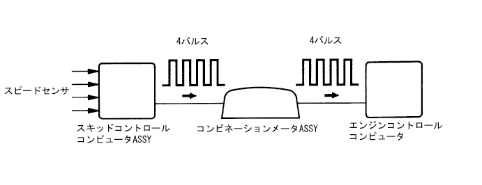
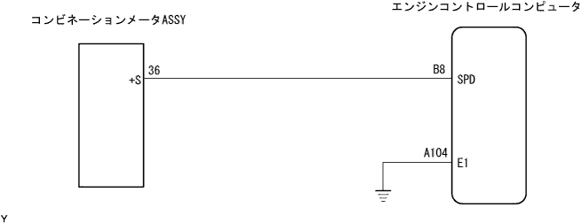
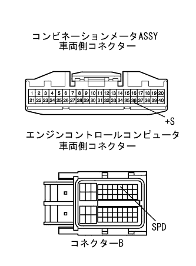

DTC P0500/42 Vehicle Speed Sensor Circuit |

| DTC No. SAE/TCCS | DTC Detection Conditions 1. Diagnosis conditions 2. Malfunction status 3. Malfunction duration 4. Other | Inspection Area |
|---|---|---|
| P0500/42 |
|
|

| Step 1 | Read TaSCAN Data (Vehicle Speed) |
Check that the speedometer operates normally.
Connect SST (TaSCAN) to DLC3.
Perform a road test of the vehicle.
Following the SST (TaSCAN) screen display, read the Data List item [Vehicle Speed] from [Diagnosis Function Menu] → [ECU Data Monitor].
|
| ||||
| OK | ||
| ||
| Step 2 | Inspect Combination Meter System |
Inspect the vehicle speed signal circuit of the meter & gauge system.
Reference| NEXT | |
| Step 3 | Inspect Wire Harness and Connector (Engine Control Computer - Combination Meter Assembly) |
Reference |
Disconnect connector B of the engine control computer and the combination meter assembly connector.
Using SST (Toyota electrical tester), measure the resistance between the engine control computer and combination meter assembly vehicle side connector terminals. (For Terminals of ECU, see)
| Tester Connection (Terminal Name) | Condition | Standard |
|---|---|---|
| B8(SPD) - 36(+S) | Always | Below 1 Ω |
| B8 (SPD) and 36 (+S) - Body ground | Always | 10k Ω or higher |
|
| ||||
| OK | ||
| ||